Сцена 1. Пещера с банками ждёт номера
Рисунок: пещера в скале над морем, у входа рассыпаны пустые жестяные банки; фигуры нет
Под слова: «Отшельник на Афоне жил среди пустых банок», «Одни банки кругом!», «пещера над Катунаками»
Первый заход · ответить: «39-s1 - номер»
 1
1
сидит у скалы над морем; белый блик на месте глаза - пограничный брак
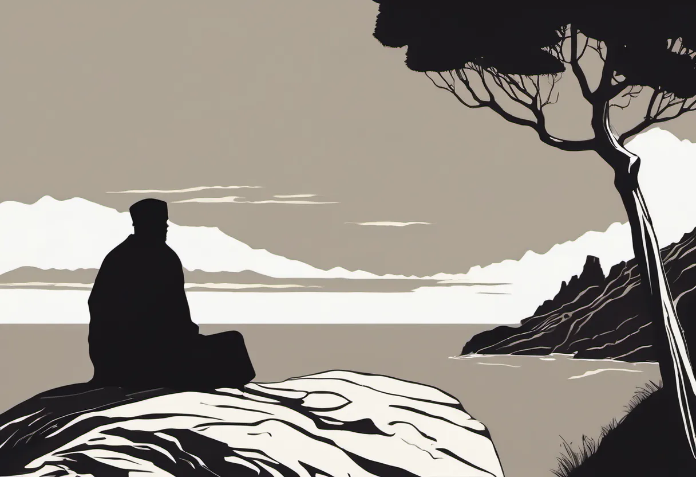
2сидит на камне, сосна; ровно
 3
3
крупно у скалы; на голове тюрбан, не скуфья - брак
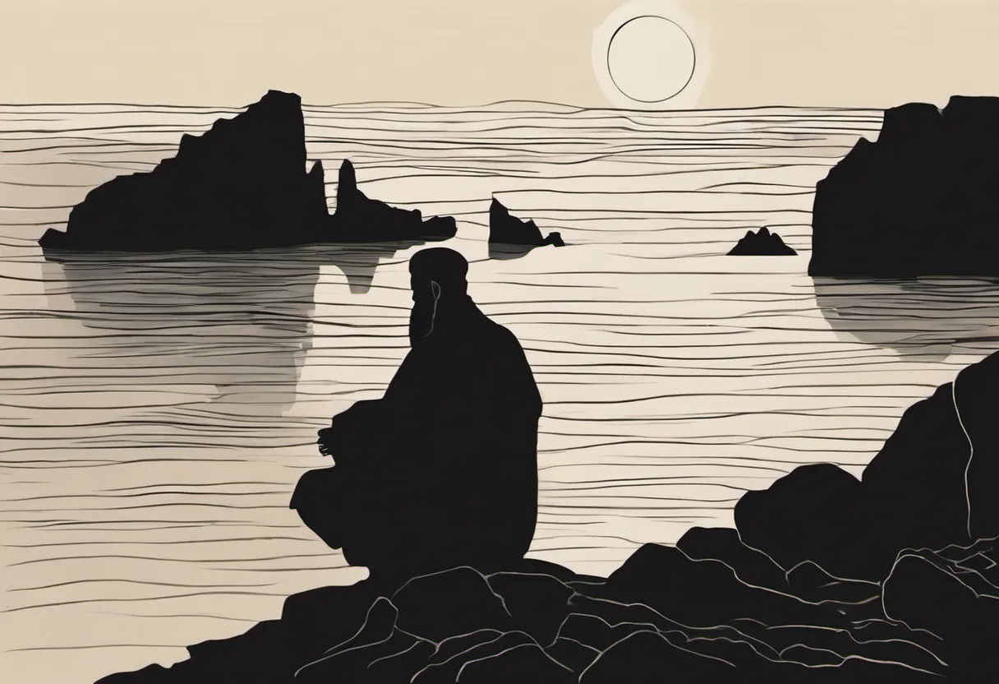
4сидит у моря, ровно
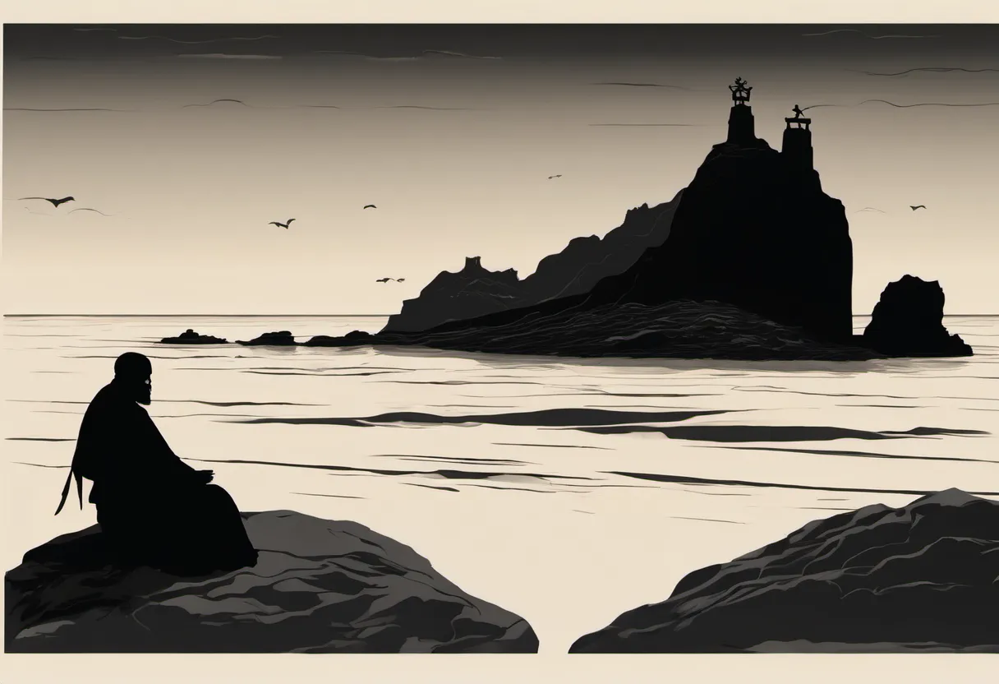
5фигура мелко слева, на дальней скале постройка с крестами
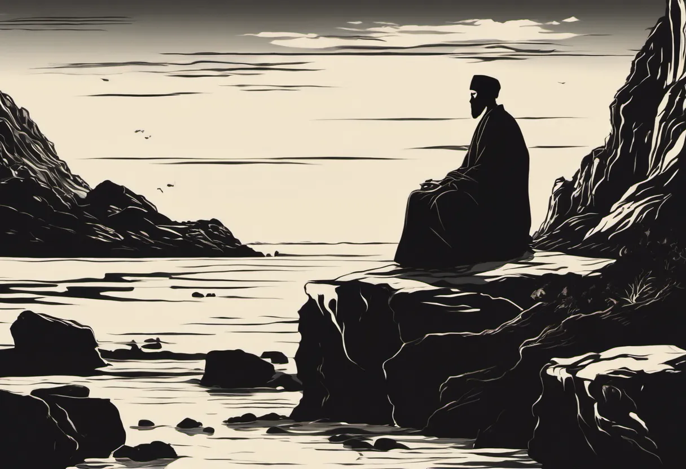
6сидит на уступе, скуфья, ровно
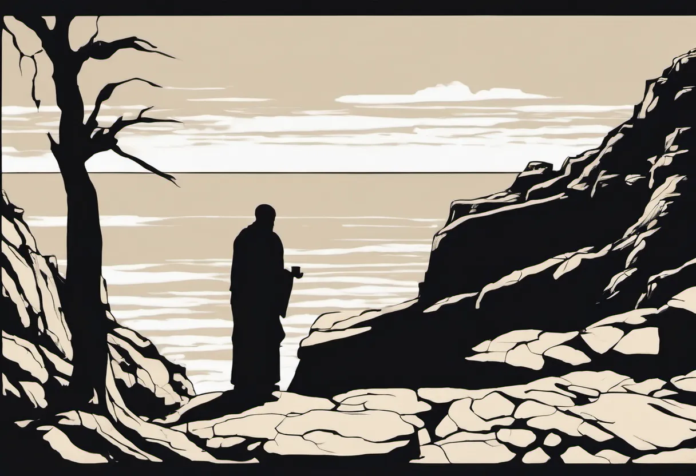
7стоит в рост, держит что-то в руке (похоже на банку)
 8
8
крупнее всех, скуфья и борода силуэтом, ровно
 9
9
стоит в рост; вдали вторая фигурка у воды
 10
10
стоит меж сосен; лишняя мелкая фигурка слева
Промпты этого листа
Промпт A: minimalist black ink silhouette illustration on cream paper, the figure is one flat solid black shape with a blank face, a few thin lines for the landscape, large empty space, expressive pose, monochrome. a monk sitting on a rock at the dark mouth of a cave, holding one empty tin can and looking down at it, many plain empty tin cans scattered around his feet, one large figure in the foreground, thin Orthodox monk in a long black cassock with a round black skufia cap on his head, beard as silhouette, faceless, steep cliff above the sea, daylight
Негатив: color, photo, photorealistic, 3d render, detailed face, eyes, nose, mouth, facial features, face in profile, realistic portrait, close-up face, text, letters, words, watermark, signature, scribble in the corner, monogram, stamp, woman, extra arms, extra hands, extra legs, extra fingers, crowd, modern objects, bald head, pointed hood, wizard hat, conical hat, heavy crosshatching, academic rendering, tiny figure
Перерисовка · ответить: «39-s1b - номер»
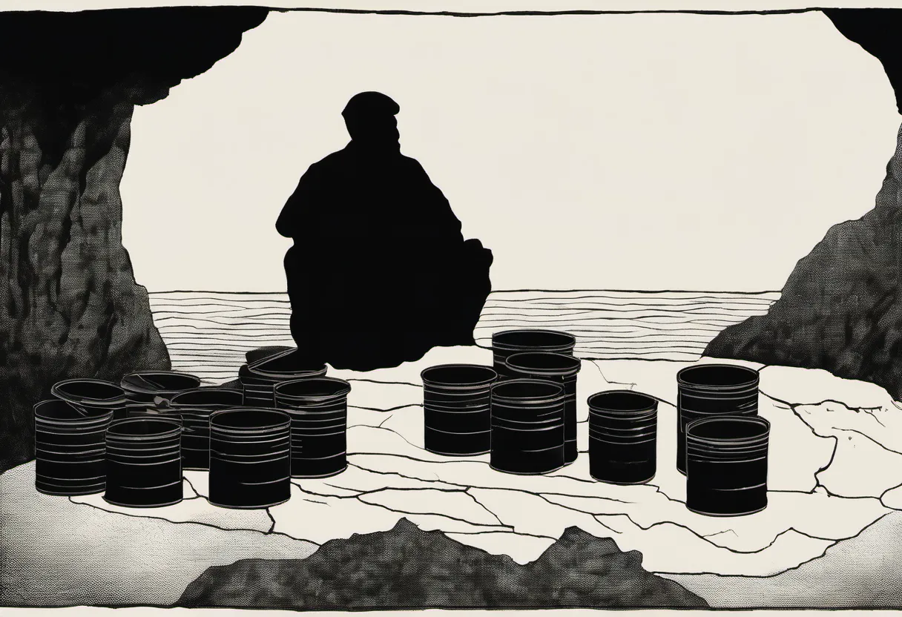
1сидит в проёме пещеры за рядами банок, крупно
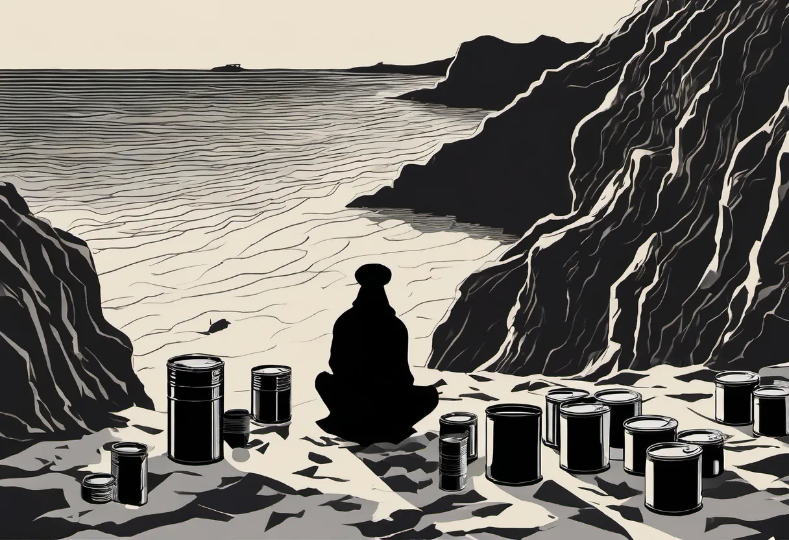
2сидит меж банок у моря, фигура средняя
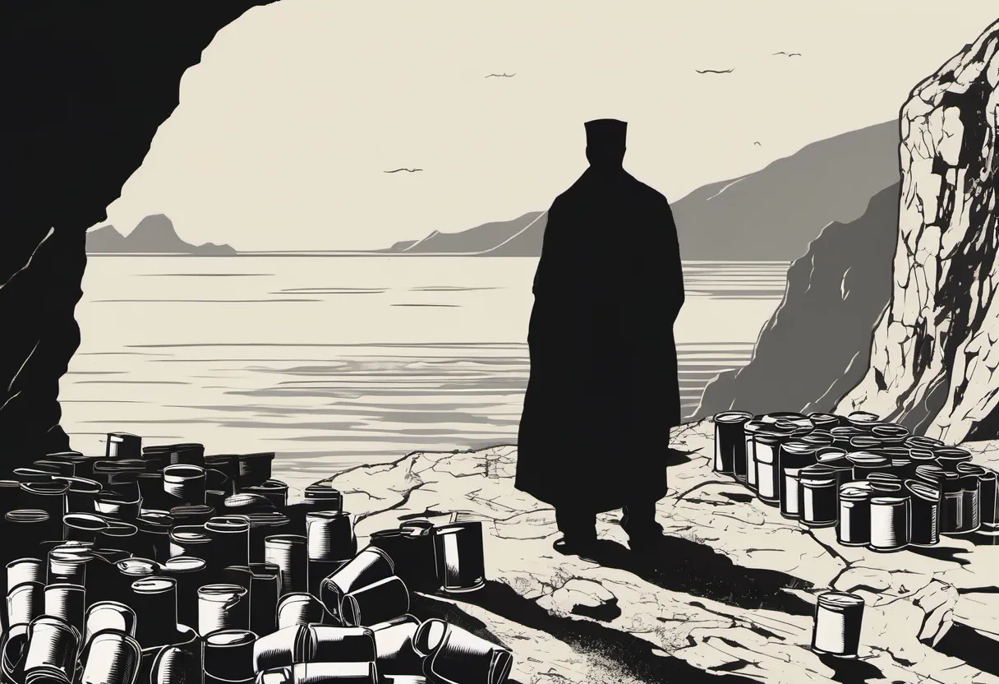
3стоит у края пещеры, по обе стороны горы банок, скуфья - сильно
 4
4
БРАК: фуражка с козырьком вместо скуфьи (современная вещь)
 5
5
стоит у моря, банки похожи на вёдра
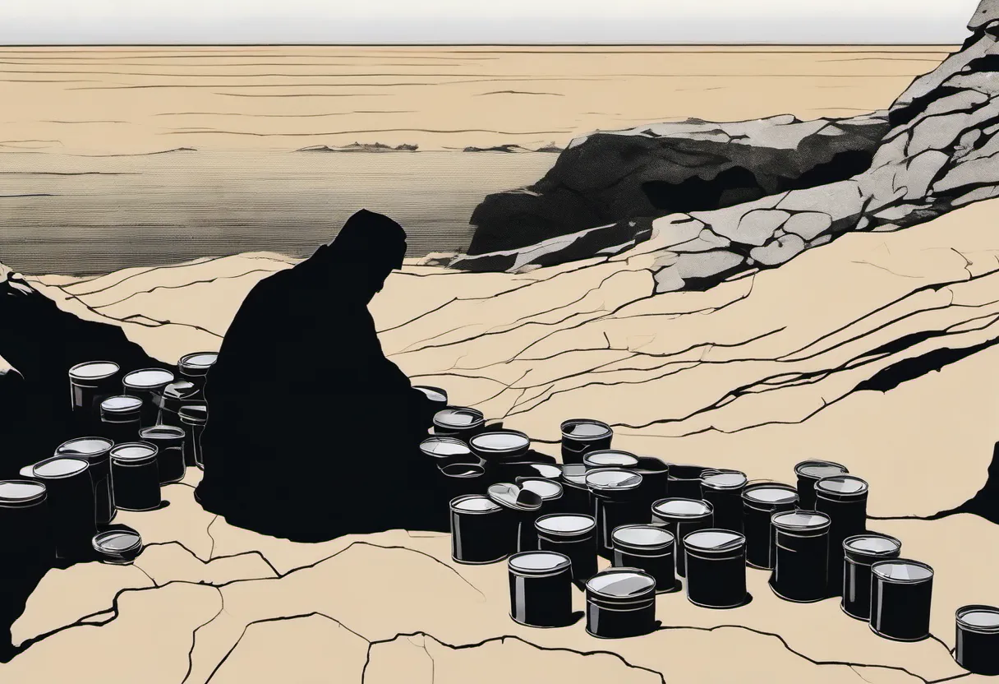
6склонился посреди моря банок - «одни банки кругом»
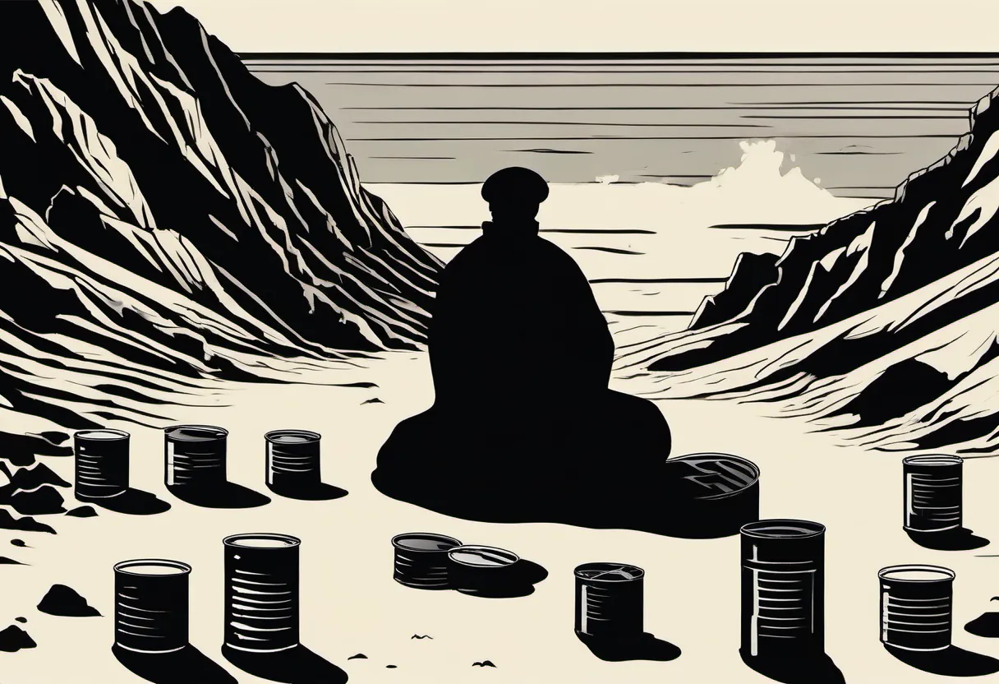
7сидит в ложбине среди банок, крупно
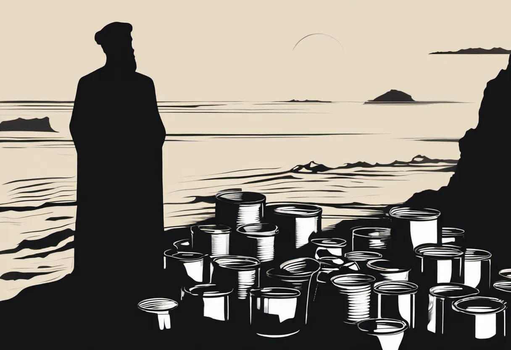
8стоит крупно над грудой банок у моря
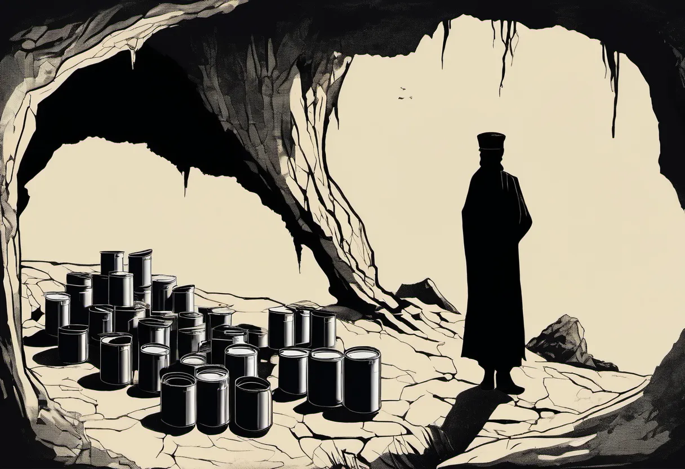
9своды пещеры, банки рядами, монах в рост в проёме - всё по сцене
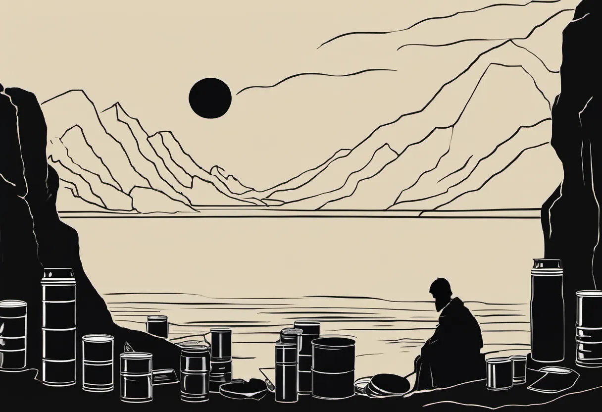
10фигура мелко справа, чёрное солнце
Промпты этого листа
Промпт A: minimalist black ink silhouette illustration on cream paper, the figure is one flat solid black shape with a blank face, a few thin lines for the landscape, large empty space, expressive pose, monochrome. (many plain empty tin cans scattered on the ground:1.5) around a monk sitting at (the dark mouth of a cave in a cliff:1.3), he holds one empty tin can and looks down at it, (only one person:1.2), one large figure in the foreground, thin Orthodox monk in a long black cassock with (a round black skufia cap on his head:1.3), beard as silhouette, faceless, sea far below, daylight
Негатив: color, photo, photorealistic, 3d render, detailed face, eyes, nose, mouth, facial features, face in profile, white eye, glowing eyes, realistic portrait, close-up face, text, letters, words, watermark, second person, two monks, signature, scribble in the corner, monogram, stamp, woman, extra arms, extra hands, extra legs, extra fingers, crowd, modern objects, bald head, pointed hood, wizard hat, conical hat, heavy crosshatching, academic rendering, tiny figure